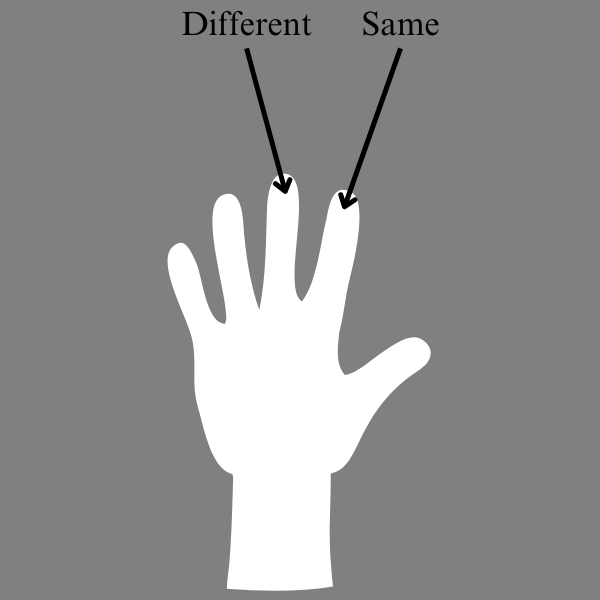

BEGIN EXPERIMENT
We are now ready to start the experiment!
You will see the same types of trials in the actual experiment, but you will not receive any feedback.
There will be 8 blocks of stimuli. Not all sentences will be grammatical. This experiment takes 10 minutes.
REMEMBER:
Press '2' if the sentences are the SAME, '1' if they are DIFFERENT.
Please answer as quickly and accurately as possible, as your performance will be evaluated on both aspects.
Press SPACE when you are ready to begin the experiment.